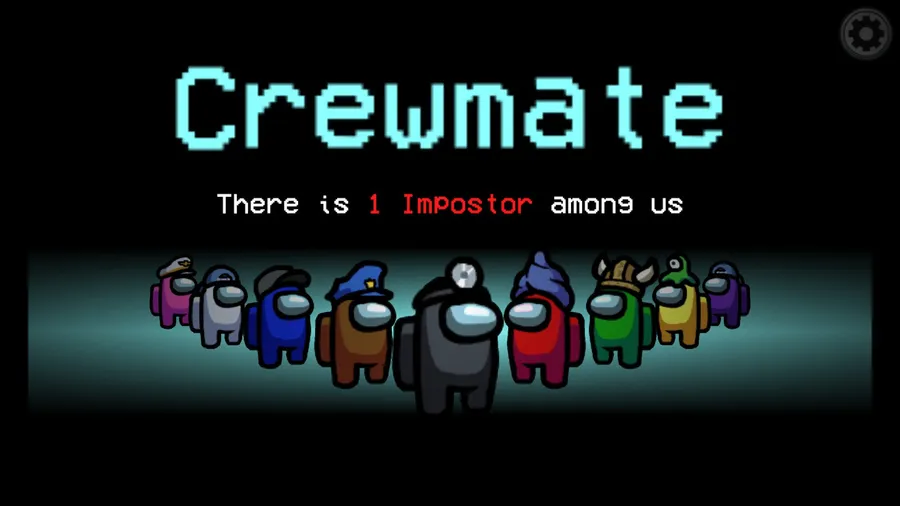

Among-Us
Among-UsAmong Us, developed by InnerSloth, is a multiplayer party game that gained immense popularity since its release in 2018. Initially designed for local play, it exploded in popularity in 2020 due to its availability on various platforms and the rise of online gaming communities. The game sets players on a space-themed setting where they take on the roles of Crewmates and Impostors. Crewmates work together to complete tasks, while Impostors attempt to eliminate them and sabotage their efforts.
Among Us originated as a local party game, but it gained significant attention when online influencers and streamers began playing it, showcasing the game's unique social deduction mechanics. Its surge in popularity led to updates and improvements by the developers, turning Among Us into a global gaming phenomenon.
Playing Among Us involves navigating the game's space station map, completing assigned tasks, and working collaboratively with other Crewmates. However, the twist lies in the presence of Impostors among the Crewmates. Impostors must discreetly eliminate Crewmates and sabotage tasks, while Crewmates try to identify and vote out the Impostors through discussion and voting rounds. The game's success hinges on communication, strategy, and deception.
Among Us became a cultural phenomenon due to its engaging gameplay and the social dynamics it fosters. It has become a staple for online multiplayer gaming, inspiring memes, fan art, and a surge in interest from players of all ages. Its simple yet compelling mechanics make it accessible to a wide audience, contributing to its continued success and influence on the gaming community.
Courtesy Adobe Stock